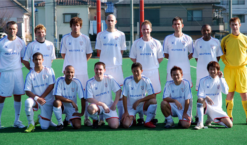

|
Hachioji Park, Saturday 31st March, Shosuke Yamagishi scored a hat-trick as BFC came back from a goal down to beat YCAC 5-1 and retake top spot in the TML on Saturday. As Vinnie Jones put it at the end of 'Lock, Stock and Two Smoking Barrels': It was emotional.
KARMA KILLER
If the size of BFC's 5-1 win over YCAC was surprising, it was the character shown by the side after going a goal down that suggests they are genuine TML title contenders. If that sounds like Rafa Benitez stating the bleedin' obvious, I'm trying desperately not to be a karma killer.
As emotional as it was for BFC to come through such a test of character against a team as talented and physical as YCAC, an almost obsessive fear (especially on the part of the Flea-bitten Dunlop) not to jinx ourselves will keep feet firmly on terra firma.
This result put BFC two points clear at the top of the TML with a game in hand on YCAC, thanks in large part to Shosuke Yamagishi, who was quite simply a class apart.
 BATTERED COD BATTERED COD
YCAC, who took this defeat with grace and total class, complained about Shosuke going to ground too easily. He did. Once. And was ticked off by his team-mates for it. But for the most part, he was battered. Again. Yet he kept picking himself up and coming back for more.
The scoreline possibly flattered BFC. Possibly. They were quickest out of the blocks, though, Alastair Himmer's early volley flashing inches over the bar.
Spectacular (and miraculous) as it would have been to see it hit the back of the net, that miss quickly came back to bite BFC in the shorts.
YCAC surged forward and a through ball was clinically tucked away by Matt Wallace with BFC's goalkeeper perhaps too slow to advance from this line.
In the past this would have provoked a total meltdown from a notoriously combustible BFC side. But not on this day. As Mauler Morson pointed out, with David Pleat-like perspicacity, during the evening's nosh-up: 'It was so important we scored after they did.'
BFC's equaliser was pure voodoo, Shosuke nudging the ball to Jon Day, who slipped it, Jedi-like, back to Shosuke to smash the ball into the top corner.
ALMOST ARSENAL
This was a one-two played on the edge of YCAC's six-yard box! Almost Arsenal, although not the Arsenal that showed up at Anfield later that day.
Shosuke then made it 2-1 to BFC with one of those mental runs that have team-mates furiously calling for taxi cabs to keep up or simply stopping, watching and giving it: 'Go on, Sho!' Go on he did, leaving two defenders for dead before flicking the ball past the YCAC keeper. Quality.
Sho then sunk to his knees like a 14-year-old, grabbing his BFC badge -- the boy's commitment this season has been nothing short of remarkable. BFC may or may not go on to win the title but if there's a better player than Shosuke in the TML I've not seen him.
Having said that, this was a first half which could have gone either way, YCAC putting BFC's defence (average height 4 foot 6 inches) under extreme pressure with their more direct style. Defending corners was like pulling teeth. Do YCAC have anyone under six foot?
HARRY POTTER ATE MY GERBIL
BFC's exuberance during the halftime interval was grumpily extinguished by a couple of senior players who have seen us press self-destruct on several occasions in the past and a much-improved second-half performance sealed the three points.
Where Taka and Terry, who had to remove his Harry Potter specs every time he went up for a header, get their energy is a mystery. How Pablo, who arrived back from his wedding in the the U.K. in the morning and came straight to Saitama, put in such a superb second-half shift was ridiculous.
Unsurprisingly it was Shosuke and Pink Neil Collins, showing the brilliance of old, who were pulling the strings and when Shosuke was clattered for the umpteenth time in the area, up stepped Tezza to spank in the peno to end his brief spell with BFC with a goal. 3-1.
The aerial barrage from YCAC continued but Brian Doyle and Morson stood firm with Ryo, Leigh Manson and, in particular Stevie G, also rock solid in arguably BFC's best defensive performance of the year.
Garry, once he had settled into the pace of the game, gained in confidence and composure as the second half went on and will, like Stevie G, become an important part of this BFC side.
Jason produced a couple of decent saves without ever being over-stretched and BFC's fourth -- a classic sucker punch on the break -- killed off the game, Paul Wadsworth flicking the ball to Neil, whose clever reverse pass gave Taka a clear path to goal.

EVERYONE IN THE OFFICE HAS WOKEN UP AT THE CRACK OF DAWN
One touch and the ball was in the bottom corner, prompting perhaps a bit too much hugging and nuzzling from BFC players on the sidelines. There were NO tongues, though! Honest!!!
YCAC's midfield and forwards, dangerous as they can be, were getting zero change out of the BFC rearguard and there was, realistically, no way back after Taka's sharp finish.
Normally so composed, YCAC began to unravel with Joe Takeda getting chewed out from the sideline, somewhat harshly as he was having a decent game and posing BFC a few problems down the left.
A fifth goal arguably flattered BFC, a terrible mix-up in the YCAC defence letting in Shosuke for the easiest goal he will ever score to complete a nonetheless deserved hat-trick.
CHICKEN KIEV
On another day, YCAC could have come out and tonked BFC 5-1 and this side recognises that they still have a lot of work to do to win a first TML title. This, though, was a must-win game and everyone stood up and refused to buckle to a very good YCAC side.
Mathematically at least, there are still five teams in the title hunt. The Swiss climbed to third after beating Sala 3-0 and champions Hibs have several games in hand.
Chicken is still off the menu, but this was a significant victory for BFC. Yes, Shosuke was the spark again, but the way the midfield and defence kept YCAC's giants at bay was, well, emotional!
Report by Knackered Converse
|